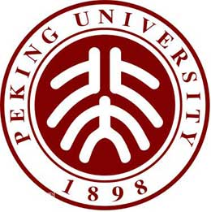

北京大学
北京大学，简称“北大”，诞生于1898年，初名京师大学堂，是中国近代第一所国立大学，也是第一个以“大学”之名创办的学校，其成立标志着中国近代高等教育的开端。北大是中国近代以来唯一以国家最高学府身份创立的学校，最初也是国家最高教育行政机关，行使教育部职能，统管全国教育。北大催生了中国最早的现代学制，开创了中国最早的文科、理科、社科、农科、医科等大学学科，是近代以来中国高等教育的奠基者。[1]
1912年5月3日，京师大学堂改称北京大学校，严复为首任校长。
1916年，蔡元培出任校长，“循思想自由原则、取兼容并包之义”，把北大办成全国的学术和思想中心，使北大成为新文化运动中心、五四运动策源地。1937年抗日战争爆发，北大与清华大学、南开大学南迁长沙，组成国立长沙临时大学。不久迁往昆明，改称国立西南联合大学。
1946年10月在北平复学。[1] 1952年院系调整，校园从内城沙滩红楼迁至西北郊燕园。[3-4]
北京大学由教育部直属，中央直管副部级建制，是国家双一流 、211工程 、985工程 、2011计划重点建设的全国重点大学；是九校联盟（C9及中国大学校长联谊会、亚洲大学联盟[7] 、东亚研究型大学协会、国际研究型大学联盟、环太平洋大学联盟、东亚四大学论坛、国际公立大学论坛、中俄综合性大学联盟[8] 重要成员。[9-11]
北大始终与国家民族的命运紧密相连，聚集了许多学者专家，培养了众多优秀人才，创造了大批重大科学成果，影响和推动了中国近现代思想理论、科学技术、文化教育和社会发展的进程。
北京大学，简称“北大”，诞生于1898年，初名京师大学堂，是中国近代第一所国立大学，也是第一个以“大学”之名创办的学校，其成立标志着中国近代高等教育的开端。北大是中国近代以来唯一以国家最高学府身份创立的学校，最初也是国家最高教育行政机关，行使教育部职能，统管全国教育。北大催生了中国最早的现代学制，开创了中国最早的文科、理科、社科、农科、医科等大学学科，是近代以来中国高等教育的奠基者。[1]
1912年5月3日，京师大学堂改称北京大学校，严复为首任校长。

北京大学地址为北京市海淀区颐和园路5号，校园占地总面积约7000亩，分为
燕园校区、医学部校区、昌平校区、大兴校区、无锡
校区和深圳研究生院校区6个部分，其中燕园校区是北京大学本部
，占地面积1.95平方公里（合2925亩）。昌平校区占地面积550多
亩。大兴校区为北京大学软件与微电子学院所在地，占地面积约5
50亩。北京大学无锡校区同样为北京大学软件与微电子学院所在地
，2008年投入使用，位于无锡市滨湖区大学城，占地面积500多亩。
北京大学医学部位于学府林立的首都北京海淀区学院路，占地面积约
990亩。 北京大学深圳研究生院（南国燕园）占地面积82.87万平方米（合1243亩），
是以全日制研究生教育为主的高等教育机构。
北大精神
北大精神是北大校园文化的本质和核心，百年来，北大精神一代代传承，在不同的历史阶段，北大人承担着不同的历史使命，但始终本着“爱国、进步、民主、科学”的传统，与祖国同呼吸、共命运。
从五四运动开始，北大人就一直有关心国家大事、关注社会生活的传统。北大的历史是不断革新的历史，北大是在新与旧的斗争中、在不断求得自我革新中发展
起来的，这使北大产生了许多重要人物和思想，成为百年名校。深厚的人文底蕴和学术积淀是北大校园文化的基础。
北大精神
北大精神是北大校园文化的本质和核心，百年来，北大精神一代代传承，在不同的历史阶段，北大人承担着不同的历史使命，但始终本着“爱国、进步、民主、科学”的传统，与祖国同呼吸、共命运。
从五四运动开始，北大人就一直有关心国家大事、关注社会生活的传统。北大的历史是不断革新的历史，北大是在新与旧的斗争中、在不断求得自我革新中发展
起来的，这使北大产生了许多重要人物和思想，成为百年名校。深厚的人文底蕴和学术积淀是北大校园文化的基础。
北大精神
北大精神是北大校园文化的本质和核心，百年来，北大精神一代代传承，在不同的历史阶段，北大人承担着不同的历史使命，但始终本着“爱国、进步、民主、科学”的传统，与祖国同呼吸、共命运。
从五四运动开始，北大人就一直有关心国家大事、关注社会生活的传统。北大的历史是不断革新的历史，北大是在新与旧的斗争中、在不断求得自我革新中发展
起来的，这使北大产生了许多重要人物和思想，成为百年名校。深厚的人文底蕴和学术积淀是北大校园文化的基础。
北大精神
北大精神是北大校园文化的本质和核心，百年来，北大精神一代代传承，在不同的历史阶段，北大人承担着不同的历史使命，但始终本着“爱国、进步、民主、科学”的传统，与祖国同呼吸、共命运。
从五四运动开始，北大人就一直有关心国家大事、关注社会生活的传统。北大的历史是不断革新的历史，北大是在新与旧的斗争中、在不断求得自我革新中发展
起来的，这使北大产生了许多重要人物和思想，成为百年名校。深厚的人文底蕴和学术积淀是北大校园文化的基础。